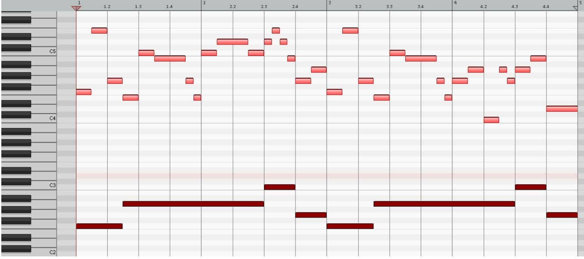

Guitar: Compose a Unique Guitar Part in 4 Steps
-
Write out the scale you used for your chord progression (example below is in F Lydian):
1 2 3 ♯4 5 6 7 8 F G A B C D E F -
Write out all the triads in that key, using chord symbols:
I II III ♯IV V VI VII - Fmaj Gmaj Am Bdim Cmaj Dm Em - -
Decide what you want to say through your musical story (i.e. chord progression), then choose the appropriate chords: major=happy, minor=sad, diminished=WTF?!
-
Guitars & higher-pitched synths thrive on melody and harmony, so break down your chords into their individual notes, and then approach them melodically.
Lastly, always use the MELODY CHECKLIST (in the Vocal PDF) for an ultimate list of hacks to compose a great melody!

Chord progression
exampleGuitar/Synth part (highlighted in MIDI) , with spelling
spelling is heard & written in relation to each chord's root note (dark notes at bottom of MIDI)Fmaj F(1) → E(7) → G(2) Am E(5) → C(♭3) → B(2) → G(♭7) → E(5) → C(♭3) → D(4) → C(♭3) Cmaj D(2) → E(3) → D(2) → B(7) Gmaj G(1) → A(2) Fmaj F(1) → E(7) → G(2) Am E(5) → C(♭3) → B(2) → G(♭7) → E(5) → G(♭7) → A(1) → C(♭3) → A(1) → G(♭7) Cmaj A(6) → B(7) Gmaj D(5) Please note: repeated parts are in black, variations are in grey